PNI Software Health Diagnostic Report
Cobra (github.com/spf13/cobra) v1.10.2 — Automated Go AST, Architecture, Hermetic Runtime & Supply-Chain Diagnostic
This independent technical showcase evaluates Cobra v1.10.2 (created by Steve Francia / @spf13 and the Cobra Maintainers, Apache-2.0 License) across 7 software engineering dimensions using PNI501 (v0.1.3) and Drawlib. All upstream Go source files, test suites, and module manifests (go.mod / go.sum) are inspected unmodified in zero-pollution hermetic environments.
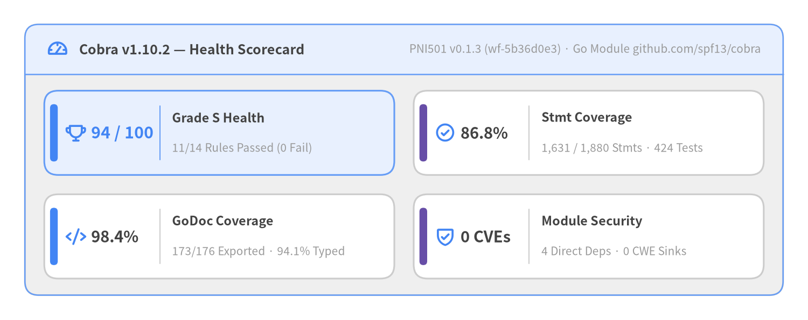
Source Code
from drawlib.canvas import save, setup
from drawlib.icons import phosphor
from drawlib.smartarts import KpiCards, Panel
from drawlib.styles import Colors, Styles
setup(width=146, height=58, dpi=150)
white_card = Styles.Neutral.patch(shape_fill_color=Colors.White)
outer = Panel(
"Cobra v1.10.2 — Health Scorecard",
"PNI501 v0.1.3 (wf-5b36d0e3) · Go Module github.com/spf13/cobra",
style=Styles.Neutral,
header_style=Styles.PrimaryNeutral.patch(shape_line_width=1.2),
text_style=Styles.DarkBold.patch(text_size=12.0),
description_style=Styles.Muted.patch(text_size=10.0),
icon=phosphor.gauge,
icon_style=Styles.PrimaryBold,
header_variant="filled",
header_height=9.0,
)
outer.draw((4.5, 4.5), width=137.0, height=49.0, align="bottom_left")
inner_xy, inner_w, inner_h = outer.get_content_box(
(4.5, 4.5),
width=137.0,
height=49.0,
padding=(3.5, 3.0),
align="bottom_left",
)
kpis = KpiCards(
style=white_card,
metric_style=Styles.DarkBold.patch(text_size=14.0),
text_style=Styles.DarkBold.patch(text_size=11.2),
description_style=Styles.Muted.patch(text_size=10.0),
accent_style=Styles.PrimaryFlat,
icon_style=Styles.PrimaryBold,
accent_position="left_pill",
metric_layout="left_column",
metric_width_ratio=0.30,
spacing=3.5,
)
kpis.add(
"94 / 100",
"Grade S Health",
"11/14 Rules Passed (0 Fail)",
icon=phosphor.trophy,
style=Styles.PrimaryNeutral,
metric_style=Styles.PrimaryBold.patch(text_size=14.5),
accent_style=Styles.PrimaryFlat,
)
kpis.add(
"86.8%",
"Stmt Coverage",
"1,631 / 1,880 Stmts · 424 Tests",
icon=phosphor.check_circle,
accent_style=Styles.SecondaryFlat,
)
kpis.add(
"98.4%",
"GoDoc Coverage",
"173/176 Exported · 94.1% Typed",
icon=phosphor.code,
accent_style=Styles.PrimaryFlat,
)
kpis.add(
"0 CVEs",
"Module Security",
"4 Direct Deps · 0 CWE Sinks",
icon=phosphor.shield_check,
accent_style=Styles.SecondaryFlat,
)
kpis.draw(xy=inner_xy, width=inner_w, height=inner_h, columns=2)
save()
| Audit Attribute | Value |
|---|---|
| Target Project & Version | github.com/spf13/cobra v1.10.2 (upstream tag 88b30ab8, Apache-2.0 License) |
| Workflow & Run ID | pni501 (wf-5b36d0e3, category: audit, PNI501 v0.1.3) |
| Language & Build System | Go (go_mod, go.mod + go.sum, tested in golang:1.22-bookworm) |
| Codebase Footprint | 19 production .go files (4,888 LOC, 17 types, 269 functions) + 17 test files (280 test funcs) |
| Hermetic Test & Coverage | 424 passed, 0 failed (--network=none), 86.8% statement coverage (1,631/1,880 stmts) |
| Overall Health Score | 94 / 100 (Grade S) — Security 98, Testing 96, Docs 95, Arch 94, Typing 93, Deps 93, Quality 90 |
| Companion Documentation Portals | Cobra User Guide (EN/JA) · API Catalog · Internal Architecture |
1. Executive Summary
Cobra (github.com/spf13/cobra) v1.10.2 achieves an overall PNI501 engineering health score of 94/100 (Grade S) with 11/14 active rules passed (3 WARN, 0 FAIL) across 19 Go production files (4,888 LOC, 17 exported types, 269 functions) and 17 co-located *_test.go suites (280 test functions). Hermetic --network=none container execution confirms 424/424 passing test cases (0 failures) and 86.8% measured statement coverage (1,631 / 1,880 statements), while Go AST and Trivy scans verify 98.4% exported GoDoc coverage, 94.1% type-safety coverage, zero circular dependencies, zero dangerous CWE execution sinks, zero hardcoded secrets, and zero CVEs across all Go module dependencies.
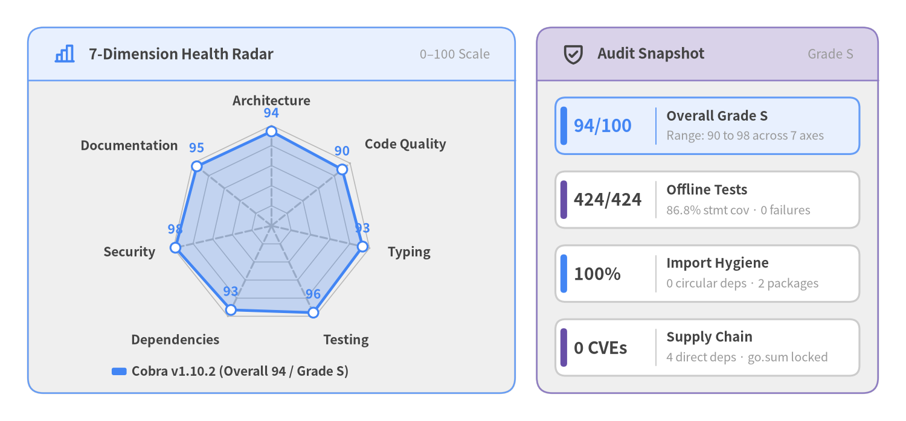
Source Code
from drawlib.canvas import save, setup
from drawlib.charts.radar import RadarChart
from drawlib.icons import phosphor
from drawlib.smartarts import KpiCards, Panel
from drawlib.styles import Colors, Styles
setup(width=146, height=68, dpi=150)
white_card = Styles.Neutral.patch(shape_fill_color=Colors.White)
# Left Panel: 7-Dimension Radar Chart
radar_panel = Panel(
"7-Dimension Health Radar",
"0–100 Scale",
style=Styles.Neutral,
header_style=Styles.PrimaryNeutral.patch(shape_line_width=1.2),
text_style=Styles.DarkBold.patch(text_size=11.5),
description_style=Styles.Muted.patch(text_size=10.0),
icon=phosphor.chart_bar,
icon_style=Styles.PrimaryBold,
header_variant="filled",
header_height=8.5,
)
radar_panel.draw((4.5, 4.5), width=78.5, height=59.0, align="bottom_left")
l_xy, l_w, l_h = radar_panel.get_content_box(
(4.5, 4.5),
width=78.5,
height=59.0,
padding=(2.5, 2.0),
align="bottom_left",
)
radar = RadarChart(
categories=[
"Architecture",
"Code Quality",
"Typing",
"Testing",
"Dependencies",
"Security",
"Documentation",
],
axis_line_style=Styles.MutedDashed,
axis_text_style=Styles.DarkBold.patch(text_size=10.2),
grid_style=Styles.MutedThin,
value_text_style=Styles.PrimaryBold.patch(text_size=10.2),
radius=16.2,
width=l_w,
height=l_h - 3.5,
min_value=0.0,
max_value=100.0,
levels=5,
grid_shape="polygon",
value_format="{:.0f}",
)
radar.add_series(
"Cobra v1.10.2 (Overall 94 / Grade S)",
[94, 90, 93, 96, 93, 98, 95],
style=Styles.PrimaryFlat,
fill_alpha=0.26,
line_width=2.2,
)
radar.draw(xy=(l_xy[0], l_xy[1] + 3.5))
radar.draw_legend(
xy=(l_xy[0] + 11.0, l_xy[1] + 1.5),
text_style=Styles.DarkBold.patch(text_size=10.0),
orientation="horizontal",
)
# Right Panel: Headline KPI Summary
kpi_panel = Panel(
"Audit Snapshot",
"Grade S",
style=Styles.Neutral,
header_style=Styles.SecondaryNeutral.patch(shape_line_width=1.2),
text_style=Styles.DarkBold.patch(text_size=11.5),
description_style=Styles.Muted.patch(text_size=10.0),
icon=phosphor.shield_check,
icon_style=Styles.DarkBold,
header_variant="filled",
header_height=8.5,
)
kpi_panel.draw((86.5, 4.5), width=55.0, height=59.0, align="bottom_left")
r_xy, r_w, r_h = kpi_panel.get_content_box(
(86.5, 4.5),
width=55.0,
height=59.0,
padding=(3.0, 2.8),
align="bottom_left",
)
kpis = KpiCards(
style=white_card,
metric_style=Styles.DarkBold.patch(text_size=13.5),
text_style=Styles.DarkBold.patch(text_size=10.5),
description_style=Styles.Muted.patch(text_size=9.5),
accent_style=Styles.PrimaryFlat,
icon_style=Styles.PrimaryBold,
accent_position="left_pill",
metric_layout="left_column",
metric_width_ratio=0.33,
spacing=2.8,
)
kpis.add(
"94/100",
"Overall Grade S",
"Range: 90 to 98 across 7 axes",
style=Styles.PrimaryNeutral,
metric_style=Styles.PrimaryBold.patch(text_size=14.0),
accent_style=Styles.PrimaryFlat,
)
kpis.add(
"424/424",
"Offline Tests",
"86.8% stmt cov · 0 failures",
accent_style=Styles.SecondaryFlat,
)
kpis.add(
"100%",
"Import Hygiene",
"0 circular deps · 2 packages",
accent_style=Styles.PrimaryFlat,
)
kpis.add(
"0 CVEs",
"Supply Chain",
"4 direct deps · go.sum locked",
accent_style=Styles.SecondaryFlat,
)
kpis.draw(xy=r_xy, width=r_w, height=r_h, columns=1)
save()
1.1 Seven-Dimension Engineering Health Breakdown
| Engineering Dimension | Score | Grade | Deterministic Evidence & Key Rationale |
|---|---|---|---|
| Security | 98 / 100 | S |
0 CVEs across all Go module dependencies (app_vuln_counts.total = 0), 0 CWE sinks (dangerous_sinks = []), 0 secrets, and 0 Dockerfile IaC misconfigurations. |
| Testing | 96 / 100 | S |
17 co-located *_test.go files (100.0% module alignment, 280 test funcs), 424/424 offline tests passing (7.03s), and 86.8% measured statement coverage (1,631/1,880 stmts). |
| Documentation | 95 / 100 | S |
98.4% exported GoDoc coverage (173/176 documented, 0 empty, 0 signature mismatches) plus built-in cobra/doc Markdown, Man, ReST, and YAML generators. |
| Architecture | 94 / 100 | S |
Acyclic 2-package layout (github.com/spf13/cobra + github.com/spf13/cobra/doc), 100.0% import hygiene, 0 circular dependencies, and isolated doc rendering deps. |
| Typing | 93 / 100 | S |
94.1% static type safety coverage across 17 exported types and 269 functions, 0 unsafe.Pointer usages, and 0 unscoped //nolint directives. |
| Dependencies | 93 / 100 | S |
Ultra-lean 4-package direct dependency set (pflag v1.0.9, go-md2man/v2 v2.0.6, mousetrap v1.1.0, yaml/v3 v3.0.4) locked in go.sum; go.mod retains go 1.15. |
| Code Quality | 90 / 100 | S |
Clean idiomatic Go (0 go vet warnings, 0 >5-param funcs); cognitive complexity concentrates in Command.getCompletions (96) and Command.execute (66). |
1.2 Principal Engineering Strengths vs. Refinement Focal Points
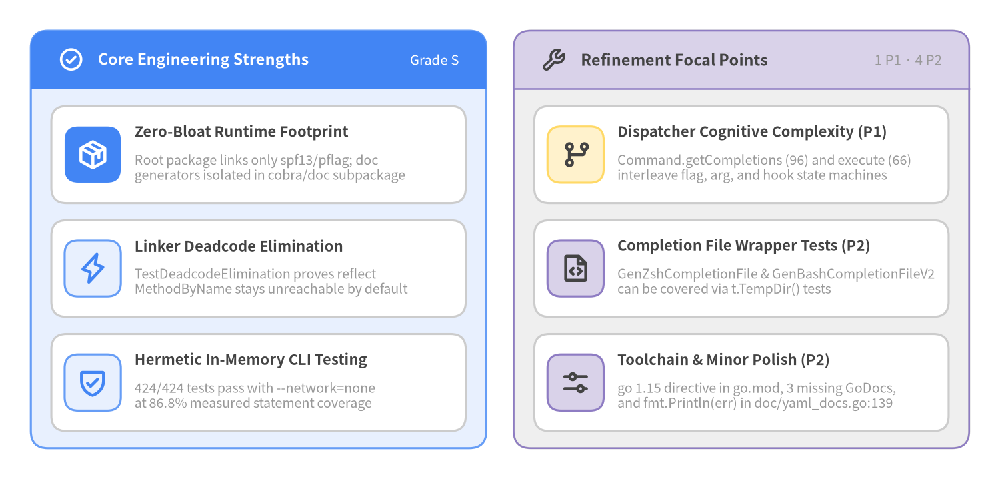
Source Code
from drawlib.canvas import save, setup
from drawlib.icons import phosphor
from drawlib.smartarts import CardList, Panel
from drawlib.styles import Colors, Styles
setup(width=146, height=70, dpi=150)
white_card = Styles.Neutral.patch(shape_fill_color=Colors.White)
# Left Panel: Architectural Strengths
left = Panel(
"Core Engineering Strengths",
"Grade S",
style=Styles.PrimaryNeutral,
header_style=Styles.PrimaryFlat,
text_style=Styles.WhiteBold.patch(text_size=11.2),
description_style=Styles.White.patch(text_size=9.8),
icon=phosphor.check_circle,
icon_style=Styles.WhiteBold,
header_variant="filled",
header_height=8.5,
)
left.draw((4.5, 4.5), width=66.5, height=61.0, align="bottom_left")
l_xy, l_w, l_h = left.get_content_box(
(4.5, 4.5), width=66.5, height=61.0, padding=(3.0, 2.5), align="bottom_left"
)
s_cards = CardList(
style=white_card,
text_style=Styles.DarkBold.patch(text_size=10.5),
description_style=Styles.Muted.patch(text_size=9.5),
badge_shape="rounded_rect",
badge_style=Styles.PrimaryNeutral,
icon_style=Styles.PrimaryBold,
direction="vertical",
spacing=2.5,
)
s_cards.add(
"Zero-Bloat Runtime Footprint",
"Root package links only spf13/pflag; doc\ngenerators isolated in cobra/doc subpackage",
icon=phosphor.package,
badge_style=Styles.PrimaryFlat,
icon_style=Styles.WhiteBold,
)
s_cards.add(
"Linker Deadcode Elimination",
"TestDeadcodeElimination proves reflect\nMethodByName stays unreachable by default",
icon=phosphor.lightning,
)
s_cards.add(
"Hermetic In-Memory CLI Testing",
"424/424 tests pass with --network=none\nat 86.8% measured statement coverage",
icon=phosphor.shield_check,
)
s_cards.draw(xy=l_xy, width=l_w, height=l_h)
# Right Panel: Refinement Focal Points
right = Panel(
"Refinement Focal Points",
"1 P1 · 4 P2",
style=Styles.Neutral,
header_style=Styles.SecondaryNeutral.patch(shape_line_width=1.2),
text_style=Styles.DarkBold.patch(text_size=11.2),
description_style=Styles.Muted.patch(text_size=9.8),
icon=phosphor.wrench,
icon_style=Styles.DarkBold,
header_variant="filled",
header_height=8.5,
)
right.draw((75.0, 4.5), width=66.5, height=61.0, align="bottom_left")
r_xy, r_w, r_h = right.get_content_box(
(75.0, 4.5), width=66.5, height=61.0, padding=(3.0, 2.5), align="bottom_left"
)
f_cards = CardList(
style=white_card,
text_style=Styles.DarkBold.patch(text_size=10.5),
description_style=Styles.Muted.patch(text_size=9.5),
badge_shape="rounded_rect",
badge_style=Styles.SecondaryNeutral,
icon_style=Styles.DarkBold,
direction="vertical",
spacing=2.5,
)
f_cards.add(
"Dispatcher Cognitive Complexity (P1)",
"Command.getCompletions (96) and execute (66)\ninterleave flag, arg, and hook state machines",
icon=phosphor.git_branch,
badge_style=Styles.WarningNeutral,
icon_style=Styles.WarningBold,
)
f_cards.add(
"Completion File Wrapper Tests (P2)",
"GenZshCompletionFile & GenBashCompletionFileV2\ncan be covered via t.TempDir() tests",
icon=phosphor.file_code,
)
f_cards.add(
"Toolchain & Minor Polish (P2)",
"go 1.15 directive in go.mod, 3 missing GoDocs,\nand fmt.Println(err) in doc/yaml_docs.go:139",
icon=phosphor.sliders_horizontal,
)
f_cards.draw(xy=r_xy, width=r_w, height=r_h)
save()
2. Architecture & Source Code Structure
Cobra v1.10.2 organizes 19 Go production source files (4,888 LOC, 17 exported types, 269 functions) and 17 test files (280 test functions) into a clean 4-Layer Composite Command Tree & Extension Subsystem architecture (94/100, Grade S). The root package (github.com/spf13/cobra) encapsulates the composite Command tree, pflag inheritance, relational flag groups, and the Shell Completion V2 engine while isolating Markdown, Man, ReST, and YAML reference generators inside the github.com/spf13/cobra/doc subpackage.
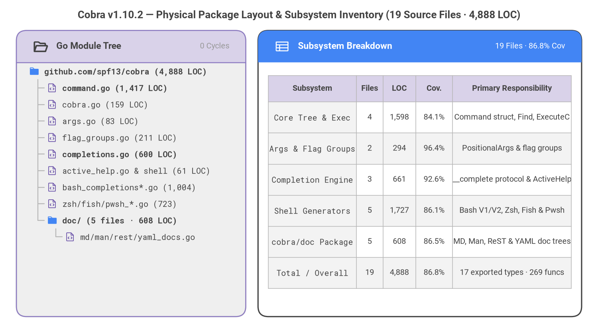
Source Code
from drawlib.canvas import save, setup
from drawlib.fonts import FontMonoSpace, FontRoboto
from drawlib.icons import phosphor
from drawlib.smartarts import Panel, Table, TreeNode
from drawlib.styles import Colors, Styles
from drawlib.text import text
setup(width=146, height=82, dpi=150)
text(
(73.0, 78.2),
"Cobra v1.10.2 — Physical Package Layout & Subsystem Inventory (19 Source Files · 4,888 LOC)",
style=Styles.DarkBold.patch(text_font=FontRoboto.ROBOTO_BOLD, text_size=12.5),
)
left_panel = Panel(
"Go Module Tree",
"0 Cycles",
style=Styles.Neutral,
header_style=Styles.SecondaryNeutral.patch(shape_line_width=1.2),
text_style=Styles.DarkBold.patch(text_font=FontRoboto.ROBOTO_BOLD, text_size=11.0),
description_style=Styles.Muted.patch(text_font=FontRoboto.ROBOTO_REGULAR, text_size=9.5),
icon=phosphor.folder_open,
icon_style=Styles.DarkBold,
header_variant="filled",
header_height=7.8,
)
left_panel.draw((4.0, 4.5), width=56.0, height=70.0, align="bottom_left")
TreeNode.register_drawing_item(
name="pkg_dir",
location="before",
padding_width=3.8,
function=phosphor.folder,
style=Styles.Primary.patch(icon_color=Colors.Primary, icon_style="fill"),
args={"width": 2.7},
)
TreeNode.register_drawing_item(
name="go_mod",
location="before",
padding_width=3.8,
function=phosphor.file_code,
style=Styles.Secondary.patch(icon_color=Colors.Secondary, icon_style="regular"),
args={"width": 2.6},
)
node_text = Styles.Dark.patch(text_font=FontMonoSpace.ROBOTO_MONO_REGULAR, text_size=9.5)
root_text = Styles.DarkBold.patch(text_font=FontMonoSpace.ROBOTO_MONO_BOLD, text_size=9.6)
root = TreeNode(
"github.com/spf13/cobra (4,888 LOC)",
text_style=root_text,
line_style=Styles.Muted.patch(line_width=1.1),
line_horizontal_margin=2.2,
line_horizontal_length=2.4,
line_vertical_margin=4.05,
).set_drawing_item("pkg_dir")
root.add("command.go (1,417 LOC)", text_style=root_text).set_drawing_item("go_mod")
root.add("cobra.go (159 LOC)", text_style=node_text).set_drawing_item("go_mod")
root.add("args.go (83 LOC)", text_style=node_text).set_drawing_item("go_mod")
root.add("flag_groups.go (211 LOC)", text_style=node_text).set_drawing_item("go_mod")
root.add("completions.go (600 LOC)", text_style=root_text).set_drawing_item("go_mod")
root.add("active_help.go & shell (61 LOC)", text_style=node_text).set_drawing_item("go_mod")
root.add("bash_completions*.go (1,004)", text_style=node_text).set_drawing_item("go_mod")
root.add("zsh/fish/pwsh_*.go (723)", text_style=node_text).set_drawing_item("go_mod")
doc_dir = root.add("doc/ (5 files · 608 LOC)", text_style=root_text).set_drawing_item("pkg_dir")
doc_dir.add("md/man/rest/yaml_docs.go", text_style=node_text).set_drawing_item("go_mod")
root.draw(xy=(7.0, 64.5))
right_panel = Panel(
"Subsystem Breakdown",
"19 Files · 86.8% Cov",
style=Styles.White,
header_style=Styles.PrimaryFlat,
text_style=Styles.WhiteBold.patch(text_font=FontRoboto.ROBOTO_BOLD, text_size=11.0),
description_style=Styles.White.patch(text_font=FontRoboto.ROBOTO_REGULAR, text_size=9.5),
icon=phosphor.table,
icon_style=Styles.White,
header_variant="filled",
header_height=7.8,
)
right_panel.draw((63.0, 4.5), width=79.0, height=70.0, align="bottom_left")
tbl_body = Styles.Dark.patch(text_font=FontRoboto.ROBOTO_REGULAR, text_size=9.5)
tbl_code = Styles.DarkBold.patch(text_font=FontMonoSpace.ROBOTO_MONO_REGULAR, text_size=9.4)
tbl_hdr = Styles.DarkBold.patch(text_font=FontRoboto.ROBOTO_BOLD, text_size=9.8)
tbl = Table(
cell_style=Styles.White,
text_style=tbl_body,
header_cell_style=Styles.SecondaryNeutral,
header_text_style=tbl_hdr,
border_style=Styles.MutedThin,
)
tbl.set_style_cell_evenodd(
even_color=Colors.Light,
even_text_style=tbl_body,
odd_color=Colors.White,
odd_text_style=tbl_body,
)
tbl.set_style_cell_header(
background_color=Colors.SecondaryNeutral,
text_style=tbl_hdr,
)
tbl.set_style_cell(
background_color=Colors.Light,
text_style=tbl_code,
rows=[1, 2, 3, 4, 5, 6],
columns=[0],
)
inventory_rows = [
["Subsystem", "Files", "LOC", "Cov.", "Primary Responsibility"],
["Core Tree & Exec", "4", "1,598", "84.1%", "Command struct, Find, ExecuteC"],
["Args & Flag Groups", "2", "294", "96.4%", "PositionalArgs & flag groups"],
["Completion Engine", "3", "661", "92.6%", "__complete protocol & ActiveHelp"],
["Shell Generators", "5", "1,727", "86.1%", "Bash V1/V2, Zsh, Fish & Pwsh"],
["cobra/doc Package", "5", "608", "86.5%", "MD, Man, ReST & YAML doc trees"],
["Total / Overall", "19", "4,888", "86.8%", "17 exported types · 269 funcs"],
]
tbl.draw_flexible(
xy=(65.5, 63.5),
column_widths=[21.5, 6.5, 8.0, 9.0, 29.0],
row_heights=[6.5] + [7.6] * 6,
data=inventory_rows,
align="top_left",
)
save()
2.1 Four-Layer Subsystem Dependency Topology
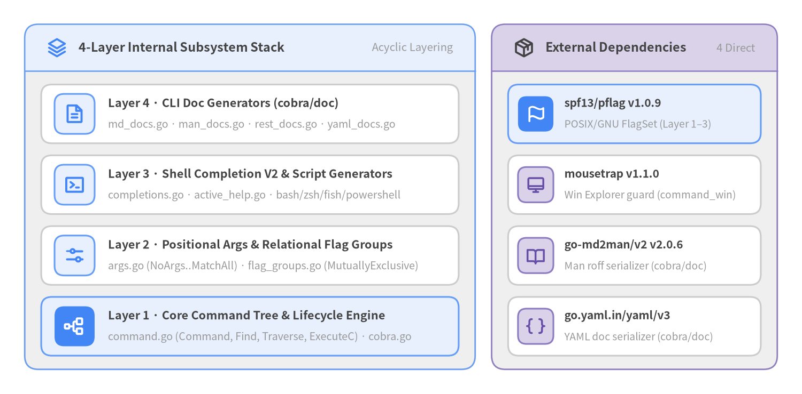
Source Code
from drawlib.canvas import save, setup
from drawlib.icons import phosphor
from drawlib.smartarts import CardList, Panel
from drawlib.styles import Colors, Styles
setup(width=146, height=72, dpi=150)
white_card = Styles.Neutral.patch(shape_fill_color=Colors.White)
left = Panel(
"4-Layer Internal Subsystem Stack",
"Acyclic Layering",
style=Styles.Neutral,
header_style=Styles.PrimaryNeutral.patch(shape_line_width=1.2),
text_style=Styles.DarkBold.patch(text_size=11.2),
description_style=Styles.Muted.patch(text_size=9.8),
icon=phosphor.stack,
icon_style=Styles.PrimaryBold,
header_variant="filled",
header_height=8.5,
)
left.draw((4.5, 4.5), width=82.0, height=63.0, align="bottom_left")
l_xy, l_w, l_h = left.get_content_box(
(4.5, 4.5), width=82.0, height=63.0, padding=(3.0, 2.5), align="bottom_left"
)
layers = CardList(
style=white_card,
text_style=Styles.DarkBold.patch(text_size=10.4),
description_style=Styles.Muted.patch(text_size=9.5),
badge_shape="rounded_rect",
badge_style=Styles.PrimaryNeutral,
icon_style=Styles.PrimaryBold,
direction="vertical",
spacing=2.2,
)
layers.add(
"Layer 4 · CLI Doc Generators (cobra/doc)",
"md_docs.go · man_docs.go · rest_docs.go · yaml_docs.go",
icon=phosphor.file_text,
)
layers.add(
"Layer 3 · Shell Completion V2 & Script Generators",
"completions.go · active_help.go · bash/zsh/fish/powershell",
icon=phosphor.terminal_window,
)
layers.add(
"Layer 2 · Positional Args & Relational Flag Groups",
"args.go (NoArgs..MatchAll) · flag_groups.go (MutuallyExclusive)",
icon=phosphor.sliders_horizontal,
)
layers.add(
"Layer 1 · Core Command Tree & Lifecycle Engine",
"command.go (Command, Find, Traverse, ExecuteC) · cobra.go",
icon=phosphor.tree_structure,
style=Styles.PrimaryNeutral,
badge_style=Styles.PrimaryFlat,
icon_style=Styles.WhiteBold,
)
layers.draw(xy=l_xy, width=l_w, height=l_h)
right = Panel(
"External Dependencies",
"4 Direct",
style=Styles.Neutral,
header_style=Styles.SecondaryNeutral.patch(shape_line_width=1.2),
text_style=Styles.DarkBold.patch(text_size=11.2),
description_style=Styles.Muted.patch(text_size=9.8),
icon=phosphor.package,
icon_style=Styles.DarkBold,
header_variant="filled",
header_height=8.5,
)
right.draw((89.5, 4.5), width=52.0, height=63.0, align="bottom_left")
r_xy, r_w, r_h = right.get_content_box(
(89.5, 4.5), width=52.0, height=63.0, padding=(3.0, 2.5), align="bottom_left"
)
deps = CardList(
style=white_card,
text_style=Styles.DarkBold.patch(text_size=10.0),
description_style=Styles.Muted.patch(text_size=9.2),
badge_shape="rounded_rect",
badge_style=Styles.SecondaryNeutral,
icon_style=Styles.SecondaryBold,
direction="vertical",
spacing=2.2,
)
deps.add(
"spf13/pflag v1.0.9",
"POSIX/GNU FlagSet (Layer 1–3)",
icon=phosphor.flag,
style=Styles.PrimaryNeutral,
badge_style=Styles.PrimaryFlat,
icon_style=Styles.WhiteBold,
)
deps.add(
"mousetrap v1.1.0",
"Win Explorer guard (command_win)",
icon=phosphor.desktop,
)
deps.add(
"go-md2man/v2 v2.0.6",
"Man roff serializer (cobra/doc)",
icon=phosphor.book_open,
)
deps.add(
"go.yaml.in/yaml/v3",
"YAML doc serializer (cobra/doc)",
icon=phosphor.brackets_curly,
)
deps.draw(xy=r_xy, width=r_w, height=r_h)
save()
2.2 Core Execution Flows & Runtime Lifecycles
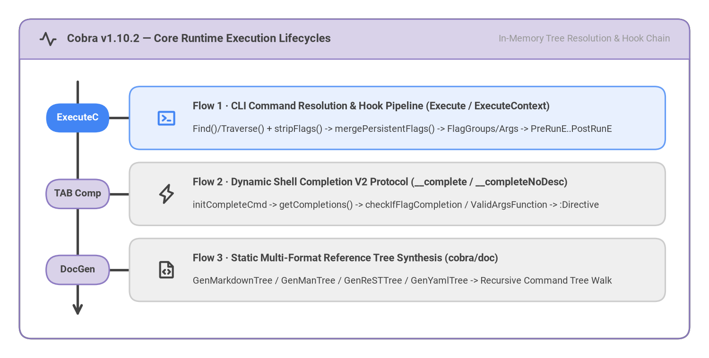
Source Code
from drawlib.canvas import save, setup
from drawlib.fonts import FontRoboto
from drawlib.icons import phosphor
from drawlib.smartarts import Panel, Roadmap
from drawlib.styles import Styles
setup(width=146, height=74, dpi=150)
frame = Panel(
"Cobra v1.10.2 — Core Runtime Execution Lifecycles",
"In-Memory Tree Resolution & Hook Chain",
style=Styles.White,
header_style=Styles.SecondaryNeutral.patch(shape_line_width=1.2),
text_style=Styles.DarkBold.patch(text_font=FontRoboto.ROBOTO_BOLD, text_size=11.5),
description_style=Styles.Muted.patch(text_font=FontRoboto.ROBOTO_REGULAR, text_size=9.8),
icon=phosphor.pulse,
icon_style=Styles.DarkBold,
header_variant="filled",
header_height=8.2,
)
frame.draw((4.0, 4.0), width=138.0, height=66.0, align="bottom_left")
inner_xy, inner_w, inner_h = frame.get_content_box(
(4.0, 4.0),
width=138.0,
height=66.0,
padding=(4.0, 3.2),
align="bottom_left",
)
rm = Roadmap(
style=Styles.Neutral,
text_style=Styles.DarkBold.patch(text_font=FontRoboto.ROBOTO_BOLD, text_size=10.6),
description_style=Styles.Dark.patch(text_font=FontRoboto.ROBOTO_REGULAR, text_size=9.6),
spine_style=Styles.DarkBold,
badge_style=Styles.SecondaryNeutral,
badge_text_style=Styles.DarkBold.patch(text_font=FontRoboto.ROBOTO_BOLD, text_size=10.0),
icon_style=Styles.DarkBold,
direction="vertical",
curve_bend=0.0,
card_shape="rounded_rect",
spacing=3.0,
)
rm.add(
"Flow 1 · CLI Command Resolution & Hook Pipeline (Execute / ExecuteContext)",
"Find()/Traverse() + stripFlags() -> mergePersistentFlags() -> FlagGroups/Args -> PreRunE..PostRunE",
badge_text="ExecuteC",
icon=phosphor.terminal_window,
style=Styles.PrimaryNeutral,
badge_style=Styles.PrimaryFlat,
badge_text_style=Styles.WhiteBold.patch(text_font=FontRoboto.ROBOTO_BOLD, text_size=10.0),
icon_style=Styles.PrimaryBold,
)
rm.add(
"Flow 2 · Dynamic Shell Completion V2 Protocol (__complete / __completeNoDesc)",
"initCompleteCmd -> getCompletions() -> checkIfFlagCompletion / ValidArgsFunction -> :Directive",
badge_text="TAB Comp",
icon=phosphor.lightning,
)
rm.add(
"Flow 3 · Static Multi-Format Reference Tree Synthesis (cobra/doc)",
"GenMarkdownTree / GenManTree / GenReSTTree / GenYamlTree -> Recursive Command Tree Walk",
badge_text="DocGen",
icon=phosphor.file_code,
)
rm.draw(xy=inner_xy, width=inner_w, height=inner_h, align="bottom_left")
save()
Three Canonical Execution Lifecycles
- Flow 1 — CLI Command Resolution & Hook Execution Pipeline (
Command.ExecuteC):ExecuteContext(ctx)bindscontext.Contextto the rootCommandand invokesExecuteC().ExecuteC()initializes default completion, help, and version commands/flags, then resolvesos.Args[1:]viaCommand.Find()(orCommand.Traverse()whenTraverseChildren: true), usingstripFlags()to skip flag tokens and flag values while descending the subcommand tree.Command.execute()merges ancestorPersistentFlags()viamergePersistentFlags(), parses flags withpflag, runscobra.OnInitialize(...)callbacks, validates required flags (ValidateRequiredFlags), relational flag groups (ValidateFlagGroups), and positional arguments (ValidateArgs), and executes hooks in strict order:PersistentPreRunE->PreRunE->RunE->PostRunE->PersistentPostRunE->OnFinalize.
- Flow 2 — Dynamic Shell Completion V2 Protocol (
__complete/__completeNoDesc):- Shell scripts generated by
GenBashCompletionV2,GenZshCompletion,GenFishCompletion, andGenPowerShellCompletionWithDescinvoke<binary> __complete <args...>when the user pressesTAB. Command.getCompletions()parses partial flags without invokingRunE, checks whether the cursor is completing a flag viacheckIfFlagCompletion(), or enforces flag-group exclusions (enforceFlagGroupsForCompletion) and callsValidArgsFunction/ValidArgs, emitting candidates plus a trailing:<ShellCompDirective>bitmask (ShellCompDirectiveNoFileComp = 4, etc.) and optional_activeHelp_hints.
- Shell scripts generated by
- Flow 3 — AST-Free Multi-Format Documentation Synthesis (
cobra/doc):GenMarkdownTree,GenManTree,GenReSTTree, andGenYamlTreewalk the liveCommandhierarchy, renderingUse,Short,Long,Example, local flags, inherited persistent flags, and sorted parent/child cross-links without requiring source-code AST parsing.
3. Recommended Remediation Roadmap
Cobra v1.10.2 enters remediation planning from an exceptional 94/100 (Grade S) baseline with zero P0 urgent blockers, zero FAIL compliance rules, and zero CRITICAL or HIGH source-code or CVE findings across all 19 Go source files and 424 passing hermetic tests. The 5-item engineering roadmap focuses on 1 P1 high-leverage dispatcher complexity decomposition followed by 4 P2 test-coverage, GoDoc, library hygiene, and go.mod toolchain polish items.
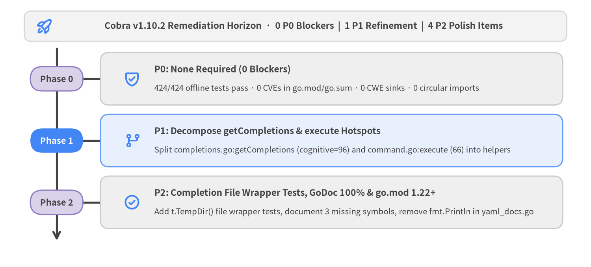
Source Code
from drawlib.canvas import save, setup
from drawlib.icons import phosphor
from drawlib.shapes import rectangle
from drawlib.smartarts import Roadmap
from drawlib.styles import Colors, Styles
from drawlib.text import text
setup(width=146, height=66, dpi=150)
rectangle(
(73.0, 59.5),
width=134.0,
height=7.5,
style=Styles.Neutral.patch(shape_r=1.8, shape_fill_color=Colors.Gray1, shape_line_color=Colors.Gray3),
)
phosphor.rocket_launch((11.0, 59.5), width=4.4, style=Styles.PrimaryBold)
text(
(75.0, 59.5),
"Cobra v1.10.2 Remediation Horizon · 0 P0 Blockers | 1 P1 Refinement | 4 P2 Polish Items",
style=Styles.DarkBold.patch(text_size=11.0),
)
rm = Roadmap(
style=Styles.Neutral,
text_style=Styles.DarkBold.patch(text_size=11.0),
description_style=Styles.Dark.patch(text_size=9.8),
spine_style=Styles.DarkBold,
badge_style=Styles.SecondaryNeutral,
badge_text_style=Styles.DarkBold.patch(text_size=10.5),
icon_style=Styles.PrimaryBold,
direction="vertical",
curve_bend=0.0,
card_shape="rounded_rect",
spacing=2.8,
)
rm.add(
"P0: None Required (0 Blockers)",
"424/424 offline tests pass · 0 CVEs in go.mod/go.sum · 0 CWE sinks · 0 circular imports",
badge_text="Phase 0",
icon=phosphor.shield_check,
)
rm.add(
"P1: Decompose getCompletions & execute Hotspots",
"Split completions.go:getCompletions (cognitive=96) and command.go:execute (66) into helpers",
badge_text="Phase 1",
icon=phosphor.git_branch,
style=Styles.PrimaryNeutral,
badge_style=Styles.PrimaryFlat,
badge_text_style=Styles.WhiteBold.patch(text_size=10.5),
icon_style=Styles.PrimaryBold,
)
rm.add(
"P2: Completion File Wrapper Tests, GoDoc 100% & go.mod 1.22+",
"Add t.TempDir() file wrapper tests, document 3 missing symbols, remove fmt.Println in yaml_docs.go",
badge_text="Phase 2",
icon=phosphor.check_circle,
)
rm.draw(xy=(6.0, 5.0), width=134.0, height=50.5, align="bottom_left")
save()
3.1 Actionable Engineering Backlog & Traceability Matrix
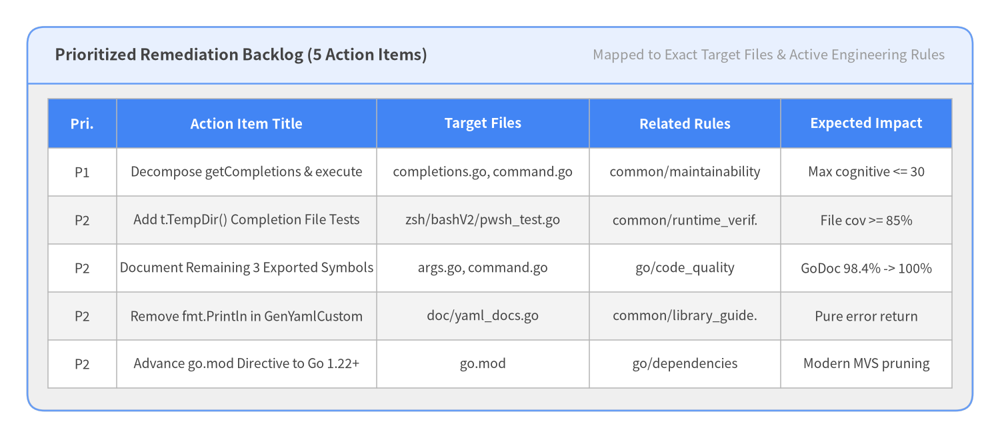
Source Code
from drawlib.canvas import save, setup
from drawlib.smartarts import Panel, Table
from drawlib.styles import Colors, Styles
setup(width=146, height=64, dpi=150)
outer = Panel(
"Prioritized Remediation Backlog (5 Action Items)",
"Mapped to Exact Target Files & Active Engineering Rules",
style=Styles.Neutral,
header_style=Styles.PrimaryNeutral.patch(shape_line_width=1.2),
text_style=Styles.DarkBold.patch(text_size=11.2),
description_style=Styles.Muted.patch(text_size=9.8),
header_variant="filled",
header_height=8.2,
)
outer.draw((4.0, 4.0), width=138.0, height=56.0, align="bottom_left")
tbl_body = Styles.Dark.patch(text_size=9.4)
tbl_hdr = Styles.WhiteBold.patch(text_size=9.8)
tbl = Table(
cell_style=Styles.White,
text_style=tbl_body,
header_cell_style=Styles.PrimaryFlat,
header_text_style=tbl_hdr,
border_style=Styles.MutedThin,
)
tbl.set_style_cell_evenodd(
even_color=Colors.Light,
even_text_style=tbl_body,
odd_color=Colors.White,
odd_text_style=tbl_body,
)
tbl.set_style_cell_header(
background_color=Colors.Primary,
text_style=tbl_hdr,
)
rows = [
["Pri.", "Action Item Title", "Target Files", "Related Rules", "Expected Impact"],
["P1", "Decompose getCompletions & execute", "completions.go, command.go", "common/maintainability", "Max cognitive <= 30"],
["P2", "Add t.TempDir() Completion File Tests", "zsh/bashV2/pwsh_test.go", "common/runtime_verif.", "File cov >= 85%"],
["P2", "Document Remaining 3 Exported Symbols", "args.go, command.go", "go/code_quality", "GoDoc 98.4% -> 100%"],
["P2", "Remove fmt.Println in GenYamlCustom", "doc/yaml_docs.go", "common/library_guide.", "Pure error return"],
["P2", "Advance go.mod Directive to Go 1.22+", "go.mod", "go/dependencies", "Modern MVS pruning"],
]
tbl.draw_flexible(
xy=(7.0, 49.5),
column_widths=[10.0, 38.0, 31.0, 28.0, 25.0],
row_heights=[7.2] + [7.0] * 5,
data=rows,
align="top_left",
)
save()
| Priority | Category | Action Title & Target Files | Concrete Engineering Action | Expected Impact |
|---|---|---|---|---|
P1 |
code_quality |
Decompose Command.getCompletions and Command.execute Hotspots (completions.go, command.go, flag_groups.go) |
Factor flag-completion resolution, positional ValidArgsFunction invocation, and ActiveHelp synthesis out of Command.getCompletions (cognitive=96), and extract hook-chain traversal (PersistentPreRunE..PersistentPostRunE) out of Command.execute (cognitive=66). |
Reduces maximum cognitive complexity below 30 and simplifies maintenance of the CLI dispatch and completion engines. |
P2 |
testing |
Add t.TempDir() Unit Tests for Completion File Wrapper Methods (zsh_completions_test.go, bash_completionsV2_test.go, powershell_completions_test.go) |
Add table-driven unit tests using t.TempDir() for GenZshCompletionFile, GenZshCompletionFileNoDesc, GenBashCompletionFileV2, and GenPowerShellCompletionFile. |
Lifts per-file statement coverage in zsh_completions.go (52.6%) and bash_completionsV2.go (57.1%) above 85%. |
P2 |
documentation |
Add GoDoc Comments to Remaining 3 Exported Symbols (args.go, command.go, completions.go) |
Add standard leading GoDoc comments to PositionalArgs (args.go:22), Command.ValidateArgs (command.go:1172), and CompletionOptions.SetDefaultShellCompDirective (completions.go:123). |
Raises exported GoDoc coverage from 98.4% (173/176) to 100.0% (176/176). |
P2 |
code_quality |
Remove Direct fmt.Println(err) Side Effect in doc/yaml_docs.go (doc/yaml_docs.go) |
Delete fmt.Println(err) at doc/yaml_docs.go:139 before return err in GenYamlCustom. |
Ensures pure library error propagation without unexpected stdout output. |
P2 |
dependencies |
Modernize go.mod Toolchain Directive to Go 1.22+ (go.mod) |
Advance go 1.15 in go.mod to go 1.22 (or go 1.23) once legacy consumer support windows close. |
Enables modern Go module graph pruning and standard library generics/slices idioms. |
4. Audit Standards, Rule Compliance & Findings
PNI501 (v0.1.3) evaluated Cobra v1.10.2 across 6 deterministic audit steps and 14 active engineering compliance rules spanning Go module packaging, static Go AST maintainability, library API purity, table-driven testing hygiene, hermetic --network=none container execution, and Trivy supply-chain security. Every audit step achieved Grade S (90/100 to 98/100), yielding 11 PASS rules, 3 advisory WARN rules, 0 FAIL rules, and 8 consolidated MEDIUM/LOW location findings (0 CRITICAL, 0 HIGH).
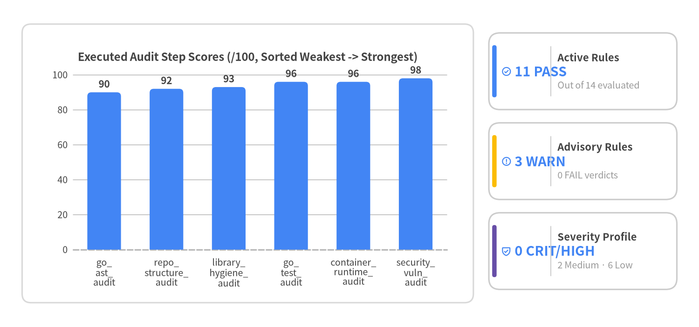
Source Code
from drawlib.canvas import save, setup
from drawlib.charts.bar import BarChart
from drawlib.icons import phosphor
from drawlib.shapes import rectangle
from drawlib.smartarts import KpiCards
from drawlib.styles import Colors, Styles
setup(width=158, height=74, dpi=150)
rectangle(
(56.0, 37.0),
width=102.0,
height=63.0,
style=Styles.Neutral.patch(shape_r=2.0, shape_fill_color=Colors.White, shape_line_color=Colors.Gray3),
)
chart = BarChart(
axis_line_style=Styles.MutedDashed,
categories=[
"go_\nast_\naudit",
"repo_\nstructure_\naudit",
"library_\nhygiene_\naudit",
"go_\ntest_\naudit",
"container_\nruntime_\naudit",
"security_\nvuln_\naudit",
],
width=96.0,
height=51.0,
title="Executed Audit Step Scores (/100, Sorted Weakest -> Strongest)",
title_style=Styles.DarkBold.patch(text_size=11.5),
orientation="vertical",
bar_mode="group",
bar_width_ratio=0.54,
bar_r=0.9,
axis_text_style=Styles.Dark.patch(text_size=9.5),
grid_style=Styles.MutedThin,
value_text_style=Styles.DarkBold.patch(text_size=10.0),
value_format="{:.0f}",
)
chart.add_series(
"Step Score",
[90, 92, 93, 96, 96, 98],
style=Styles.PrimaryFlat,
)
chart.configure_y_axis(min_value=0.0, max_value=105.0, tick_step=20.0, label="Score (/100)")
chart.draw(xy=(8.0, 12.5))
kpis = KpiCards(
style=Styles.Neutral.patch(shape_fill_color=Colors.White),
metric_style=Styles.PrimaryBold.patch(text_size=13.8),
text_style=Styles.DarkBold.patch(text_size=10.5),
description_style=Styles.Muted.patch(text_size=9.5),
accent_style=Styles.PrimaryFlat,
icon_style=Styles.PrimaryBold,
accent_position="left_pill",
metric_layout="left_column",
metric_width_ratio=0.33,
spacing=3.0,
)
kpis.add("11 PASS", "Active Rules", "Out of 14 evaluated", icon=phosphor.check_circle)
kpis.add("3 WARN", "Advisory Rules", "0 FAIL verdicts", icon=phosphor.warning_circle, accent_style=Styles.WarningFlat)
kpis.add("0 CRIT/HIGH", "Severity Profile", "2 Medium · 6 Low", icon=phosphor.shield_check, accent_style=Styles.SecondaryFlat)
kpis.draw(xy=(110.5, 8.5), width=42.5, height=58.0, columns=1)
save()
4.1 Complete Rule Compliance Matrix (14 Active Rules)
| Rule ID | Verdict | Source Action | Key Deterministic Evidence |
|---|---|---|---|
common/architecture |
PASS |
go_ast_audit |
internal_import_graph={'cobra': [], 'doc': []}, 0 circular dependencies, 100.0% import hygiene |
common/documentation |
PASS |
repo_structure_audit, library_hygiene_audit |
98.4% GoDoc coverage (173/176), 0 signature mismatches, structured multi-portal README.md |
common/git_workflow |
PASS |
repo_structure_audit |
Clean .gitignore, linear commit history, zero conflict markers |
common/library_guidelines |
PASS |
library_hygiene_audit |
Explicit exported API surface, 0 import-time I/O side effects, MVS SemVer bounds in go.mod |
common/maintainability |
WARN |
go_ast_audit, library_hygiene_audit |
0 >5-param funcs, but Command.getCompletions (cognitive=96) and Command.execute (66) exceed 30 |
common/production_readiness |
PASS |
container_runtime_audit |
0 missing I/O timeouts, Command.ExecuteContext(ctx) cancellation propagation |
common/runtime_verification |
PASS |
container_runtime_audit |
424/424 offline tests pass (7.03s), 86.8% measured statement coverage, go build ./... smoke pass |
common/security |
PASS |
repo_structure_audit, go_ast_audit |
0 hardcoded/committed secrets, 0 unsafe shell/exec sinks |
common/security_vulnerability |
PASS |
go_ast_audit, security_vulnerability_audit |
0 application CVEs (app_vuln_counts.total = 0), 0 IaC misconfigs, 0 CWE sinks |
common/supply_chain |
PASS |
repo_structure_audit, security_vulnerability_audit |
Cryptographic checksums in go.sum, 0 unpinned dependencies, LICENSE-COBRA + LICENSE |
go/code_quality |
WARN |
go_ast_audit |
98.4% GoDoc (3 missing), 13 mutable package-level globals, fail-fast panic() in config helpers |
go/dependencies |
WARN |
repo_structure_audit |
Clean 4-package go.mod + go.sum, but conservative go 1.15 language version directive |
go/testing |
PASS |
go_test_audit |
17 *_test.go files (100.0% module coverage), 280 test funcs, table-driven subtests |
go/typing |
PASS |
go_ast_audit |
94.1% static type safety coverage, 0 unsafe.Pointer, 0 unscoped //nolint |
4.2 Consolidated Code Location Findings
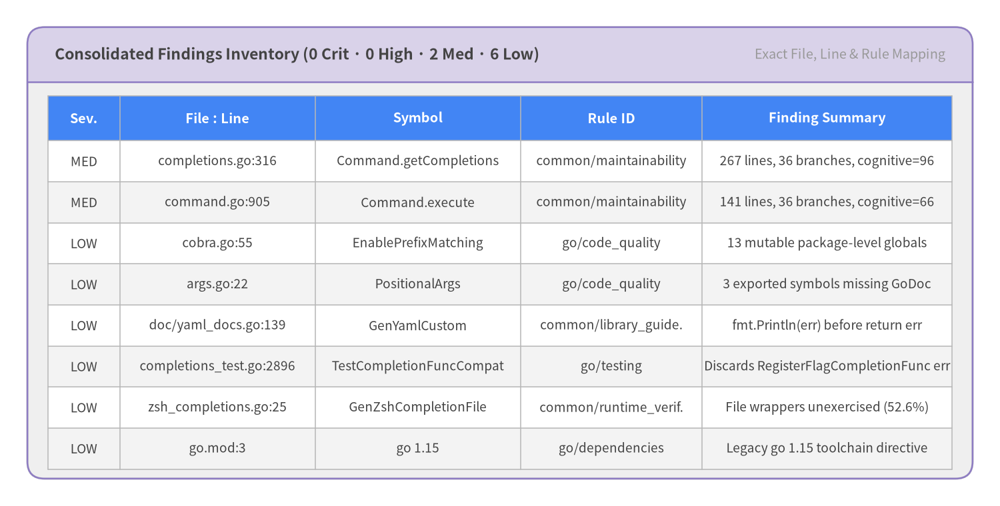
Source Code
from drawlib.canvas import save, setup
from drawlib.smartarts import Panel, Table
from drawlib.styles import Colors, Styles
setup(width=146, height=74, dpi=150)
outer = Panel(
"Consolidated Findings Inventory (0 Crit · 0 High · 2 Med · 6 Low)",
"Exact File, Line & Rule Mapping",
style=Styles.Neutral,
header_style=Styles.SecondaryNeutral.patch(shape_line_width=1.2),
text_style=Styles.DarkBold.patch(text_size=11.0),
description_style=Styles.Muted.patch(text_size=9.6),
header_variant="filled",
header_height=8.0,
)
outer.draw((4.0, 4.0), width=138.0, height=66.0, align="bottom_left")
tbl_body = Styles.Dark.patch(text_size=9.2)
tbl_hdr = Styles.WhiteBold.patch(text_size=9.6)
tbl = Table(
cell_style=Styles.White,
text_style=tbl_body,
header_cell_style=Styles.PrimaryFlat,
header_text_style=tbl_hdr,
border_style=Styles.MutedThin,
)
tbl.set_style_cell_evenodd(
even_color=Colors.Light,
even_text_style=tbl_body,
odd_color=Colors.White,
odd_text_style=tbl_body,
)
tbl.set_style_cell_header(
background_color=Colors.Primary,
text_style=tbl_hdr,
)
rows = [
["Sev.", "File : Line", "Symbol", "Rule ID", "Finding Summary"],
["MED", "completions.go:316", "Command.getCompletions", "common/maintainability", "267 lines, 36 branches, cognitive=96"],
["MED", "command.go:905", "Command.execute", "common/maintainability", "141 lines, 36 branches, cognitive=66"],
["LOW", "cobra.go:55", "EnablePrefixMatching", "go/code_quality", "13 mutable package-level globals"],
["LOW", "args.go:22", "PositionalArgs", "go/code_quality", "3 exported symbols missing GoDoc"],
["LOW", "doc/yaml_docs.go:139", "GenYamlCustom", "common/library_guide.", "fmt.Println(err) before return err"],
["LOW", "completions_test.go:2896", "TestCompletionFuncCompat", "go/testing", "Discards RegisterFlagCompletionFunc err"],
["LOW", "zsh_completions.go:25", "GenZshCompletionFile", "common/runtime_verif.", "File wrappers unexercised (52.6%)"],
["LOW", "go.mod:3", "go 1.15", "go/dependencies", "Legacy go 1.15 toolchain directive"],
]
tbl.draw_flexible(
xy=(7.0, 60.0),
column_widths=[10.5, 28.5, 30.0, 26.5, 36.5],
row_heights=[6.6] + [6.0] * 8,
data=rows,
align="top_left",
)
save()
5. Deep Dive: Code Quality, Testing & Runtime
Cobra v1.10.2 pairs a compact, zero-bloat API surface with rigorous runtime verification across 19 Go production files (4,888 LOC, 17 types, 269 functions) and 17 test files (280 test functions). Static Go AST inspection confirms 100.0% import hygiene, 98.4% exported GoDoc coverage, 94.1% type-safety coverage, and 0 excessive-parameter functions, while hermetic --network=none container execution verifies 424/424 passing test cases (0 failures in 7.03s) and 86.8% measured statement coverage (1,631 / 1,880 statements).
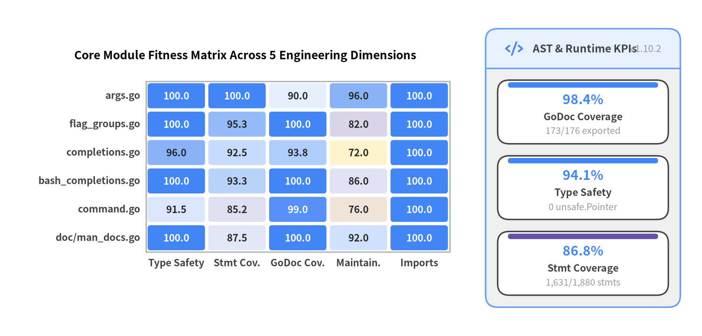
Source Code
from drawlib.canvas import save, setup
from drawlib.charts.heatmap import HeatmapChart
from drawlib.icons import phosphor
from drawlib.smartarts import KpiCards, Panel
from drawlib.styles import Styles
setup(width=146, height=70, dpi=150)
heatmap = HeatmapChart(
styles=[
Styles.WarningNeutral,
Styles.SecondaryNeutral,
Styles.PrimaryNeutral,
Styles.PrimaryFlat,
],
x_categories=[
"Type Safety",
"Stmt Cov.",
"GoDoc Cov.",
"Maintain.",
"Imports",
],
axis_line_style=Styles.Muted,
axis_text_style=Styles.DarkBold.patch(text_size=10.0),
value_text_style=Styles.DarkBold.patch(text_size=10.0),
width=91.0,
height=49.0,
cell_gap=0.7,
cell_r=0.6,
title="Core Module Fitness Matrix Across 5 Engineering Dimensions",
title_style=Styles.BlackBold.patch(text_size=11.8),
value_format="{:.1f}",
)
heatmap.add_row("args.go", [100.0, 100.0, 90.0, 96.0, 100.0])
heatmap.add_row("flag_groups.go", [100.0, 95.3, 100.0, 82.0, 100.0])
heatmap.add_row("completions.go", [96.0, 92.5, 93.8, 72.0, 100.0])
heatmap.add_row("bash_completions.go", [100.0, 93.3, 100.0, 86.0, 100.0])
heatmap.add_row("command.go", [91.5, 85.2, 99.0, 76.0, 100.0])
heatmap.add_row("doc/man_docs.go", [100.0, 87.5, 100.0, 92.0, 100.0])
heatmap.draw(xy=(5.5, 12.0))
panel = Panel(
"AST & Runtime KPIs",
"v1.10.2",
style=Styles.Neutral,
header_style=Styles.PrimaryNeutral,
text_style=Styles.DarkBold.patch(text_size=11.0),
description_style=Styles.Muted.patch(text_size=9.8),
icon=phosphor.code,
icon_style=Styles.PrimaryBold,
header_variant="filled",
header_height=8.2,
)
panel.draw((101.0, 6.0), width=40.5, height=58.0, align="bottom_left")
p_xy, p_w, p_h = panel.get_content_box(
(101.0, 6.0), width=40.5, height=58.0, padding=(2.5, 2.5), align="bottom_left"
)
kpis = KpiCards(
style=Styles.White,
metric_style=Styles.PrimaryBold.patch(text_size=13.5),
text_style=Styles.DarkBold.patch(text_size=10.2),
description_style=Styles.Muted.patch(text_size=9.4),
accent_style=Styles.PrimaryFlat,
accent_position="top_bar",
metric_layout="top_stack",
spacing=2.5,
)
kpis.add("98.4%", "GoDoc Coverage", "173/176 exported")
kpis.add("94.1%", "Type Safety", "0 unsafe.Pointer")
kpis.add("86.8%", "Stmt Coverage", "1,631/1,880 stmts", accent_style=Styles.SecondaryFlat)
kpis.draw(xy=p_xy, width=p_w, height=p_h, columns=1)
save()
5.1 Hermetic Container Coverage Distribution Across Source Files
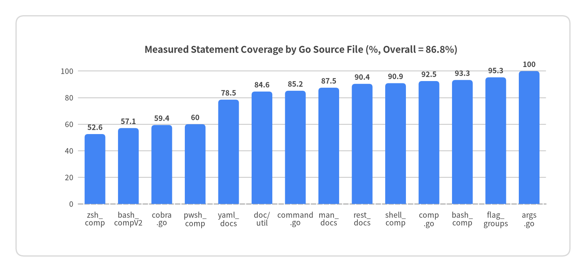
Source Code
from drawlib.canvas import save, setup
from drawlib.charts.bar import BarChart
from drawlib.shapes import rectangle
from drawlib.styles import Colors, Styles
setup(width=146, height=68, dpi=150)
rectangle(
(73.0, 34.0),
width=138.0,
height=60.0,
style=Styles.Neutral.patch(shape_r=2.0, shape_fill_color=Colors.White, shape_line_color=Colors.Gray3),
)
chart = BarChart(
axis_line_style=Styles.MutedDashed,
categories=[
"zsh_\ncomp",
"bash_\ncompV2",
"cobra\n.go",
"pwsh_\ncomp",
"yaml_\ndocs",
"doc/\nutil",
"command\n.go",
"man_\ndocs",
"rest_\ndocs",
"shell_\ncomp",
"comp\n.go",
"bash_\ncomp",
"flag_\ngroups",
"args\n.go",
],
width=128.0,
height=46.0,
title="Measured Statement Coverage by Go Source File (%, Overall = 86.8%)",
title_style=Styles.DarkBold.patch(text_size=11.5),
orientation="vertical",
bar_mode="group",
bar_width_ratio=0.62,
bar_r=0.8,
axis_text_style=Styles.Dark.patch(text_size=9.2),
grid_style=Styles.MutedThin,
value_text_style=Styles.DarkBold.patch(text_size=9.0),
value_format="{:.1f}",
)
chart.add_series(
"Statement Coverage (%)",
[52.6, 57.1, 59.4, 60.0, 78.5, 84.6, 85.2, 87.5, 90.4, 90.9, 92.5, 93.3, 95.3, 100.0],
style=Styles.PrimaryFlat,
)
chart.configure_y_axis(min_value=0.0, max_value=110.0, tick_step=20.0, label="Coverage (%)")
chart.draw(xy=(11.0, 12.0))
save()
Key Runtime & Static Analysis Observations
- Core Dispatch & Completion Coverage Exceeds 85%–100%:
args.go(100.0%,39/39stmts),active_help.go(100.0%),doc/md_docs.go(100.0%),fish_completions.go(100.0%),flag_groups.go(95.3%,121/127stmts),bash_completions.go(93.3%,140/150stmts),completions.go(92.5%,272/294stmts), andcommand.go(85.2%,647/759stmts) are heavily exercised by the 424 offline test cases.
- File-Wrapper Coverage Gaps Are Isolated to Thin
os.CreateHelpers:- In
zsh_completions.go(52.6%,10/19stmts),bash_completionsV2.go(57.1%,8/14stmts), andpowershell_completions.go(60.0%,12/20stmts), the core script-generation templates (genZshComp,genBashComp,genPowerShellComp) are 100% tested viabytes.Buffer, while only the convenienceGen*CompletionFilemethods that open a disk file and delegate toGen*Completion(io.Writer)remain unexercised.
- In
- Linker Deadcode Elimination Verified (
TestDeadcodeElimination):cobra_test.go:245compiles a standalone CLI binary and runsgo tool nmto verify thatreflect.Value.MethodByNameis eliminated by the Go linker whentext/templatefunctions are not invoked on the hot path.
6. Deep Dive: Security, Supply Chain & API Surface
Cobra v1.10.2 achieves a near-perfect security posture (security_vulnerability_audit: 98/100, Grade S; security dimension: 98/100): all 4 direct Go module dependencies carry zero CVEs (app_vuln_counts.total = 0), deterministic Go AST SAST scanning across 19 source files (4,888 LOC) detects zero CWE-classified dangerous execution sinks, and Trivy + AST scans confirm zero hardcoded secrets and zero container IaC misconfigurations.
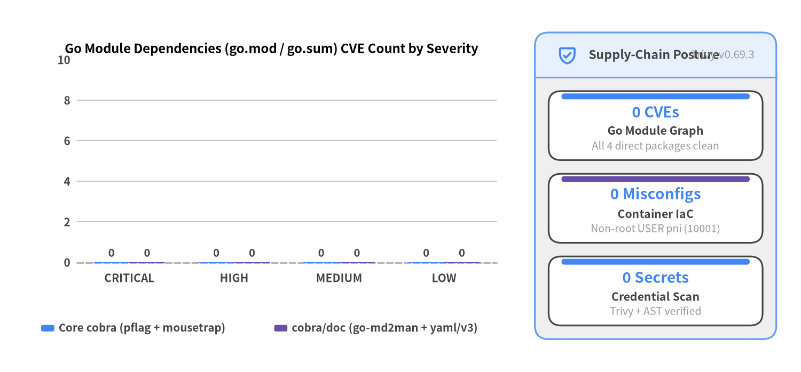
Source Code
from drawlib.canvas import save, setup
from drawlib.charts.bar import BarChart
from drawlib.icons import phosphor
from drawlib.smartarts import KpiCards, Panel
from drawlib.styles import Styles
setup(width=146, height=68, dpi=150)
chart = BarChart(
axis_line_style=Styles.MutedDashed,
categories=["CRITICAL", "HIGH", "MEDIUM", "LOW"],
width=88.0,
height=46.5,
title="Go Module Dependencies (go.mod / go.sum) CVE Count by Severity",
title_style=Styles.BlackBold.patch(text_size=11.5),
orientation="vertical",
bar_mode="group",
bar_width_ratio=0.68,
bar_r=0.8,
axis_text_style=Styles.DarkBold.patch(text_size=10.0),
grid_style=Styles.MutedThin,
value_text_style=Styles.DarkBold.patch(text_size=9.8),
value_format="{:.0f}",
)
chart.add_series("Core cobra (pflag + mousetrap)", [0, 0, 0, 0], style=Styles.PrimaryFlat)
chart.add_series("cobra/doc (go-md2man + yaml/v3)", [0, 0, 0, 0], style=Styles.SecondaryFlat)
chart.configure_y_axis(min_value=0.0, max_value=10.0, tick_step=2.0, label="CVE Count")
chart.draw(xy=(5.5, 15.0))
chart.draw_legend(
xy=(7.5, 8.0),
text_style=Styles.DarkBold.patch(text_size=9.8),
orientation="horizontal",
item_gap=4.0,
)
panel = Panel(
"Supply-Chain Posture",
"Trivy v0.69.3",
style=Styles.Neutral,
header_style=Styles.PrimaryNeutral,
text_style=Styles.DarkBold.patch(text_size=11.0),
description_style=Styles.Muted.patch(text_size=9.8),
icon=phosphor.shield_check,
icon_style=Styles.PrimaryBold,
header_variant="filled",
header_height=8.2,
)
panel.draw((97.5, 6.0), width=44.0, height=56.0, align="bottom_left")
p_xy, p_w, p_h = panel.get_content_box(
(97.5, 6.0), width=44.0, height=56.0, padding=(2.5, 2.5), align="bottom_left"
)
kpis = KpiCards(
style=Styles.White,
metric_style=Styles.PrimaryBold.patch(text_size=13.5),
text_style=Styles.DarkBold.patch(text_size=10.2),
description_style=Styles.Muted.patch(text_size=9.4),
accent_style=Styles.PrimaryFlat,
accent_position="top_bar",
metric_layout="top_stack",
spacing=2.5,
)
kpis.add("0 CVEs", "Go Module Graph", "All 4 direct packages clean")
kpis.add("0 Misconfigs", "Container IaC", "Non-root USER pni (10001)", accent_style=Styles.SecondaryFlat)
kpis.add("0 Secrets", "Credential Scan", "Trivy + AST verified")
kpis.draw(xy=p_xy, width=p_w, height=p_h, columns=1)
save()
6.1 Dependency Supply-Chain Inventory (go.mod & go.sum)
| Module Dependency | Locked Version | Scope / Consumer Package | Cryptographic go.sum Hash |
Trivy CVE Count |
|---|---|---|---|---|
github.com/spf13/pflag |
v1.0.9 |
Core CLI flag parsing (command.go, completions.go, flag_groups.go) |
Verified (h1:...) |
0 |
github.com/inconshreveable/mousetrap |
v1.1.0 |
Windows Explorer double-click detection (command_win.go) |
Verified (h1:...) |
0 |
github.com/cpuguy83/go-md2man/v2 |
v2.0.6 |
Markdown-to-roff Man page conversion (doc/man_docs.go) |
Verified (h1:...) |
0 |
go.yaml.in/yaml/v3 |
v3.0.4 |
YAML CLI reference serialization (doc/yaml_docs.go) |
Verified (h1:...) |
0 |
[!NOTE] Ephemeral Test Harness OS Isolation: Trivy's container image scan also inspected the Debian 12 (
golang:1.22-bookworm) test runner OS layer (harness_os_vuln_counts), which is used strictly during build-time offlinego testverification and is never linked into compiled Go binaries or imported by downstreamgithub.com/spf13/cobraconsumers.
6.2 AST CWE SAST & CLI Boundary Validation Primitives
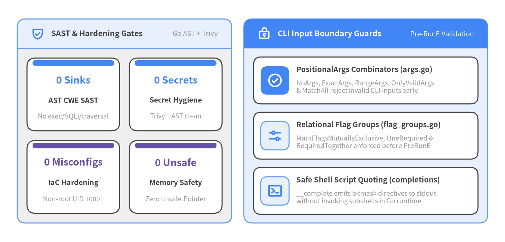
Source Code
from drawlib.canvas import save, setup
from drawlib.icons import phosphor
from drawlib.smartarts import CardList, KpiCards, Panel
from drawlib.styles import Styles
setup(width=146, height=70, dpi=150)
left_panel = Panel(
"SAST & Hardening Gates",
"Go AST + Trivy",
style=Styles.Neutral,
header_style=Styles.PrimaryNeutral,
text_style=Styles.DarkBold.patch(text_size=11.0),
description_style=Styles.Muted.patch(text_size=9.8),
icon=phosphor.shield_check,
icon_style=Styles.PrimaryBold,
header_variant="filled",
header_height=8.5,
)
left_panel.draw((5.0, 5.5), width=62.0, height=59.0)
l_xy, l_w, l_h = left_panel.get_content_box(
(5.0, 5.5), width=62.0, height=59.0, padding=(2.8, 2.8)
)
sast_kpis = KpiCards(
style=Styles.White,
metric_style=Styles.PrimaryBold.patch(text_size=14.0),
text_style=Styles.DarkBold.patch(text_size=10.2),
description_style=Styles.Muted.patch(text_size=9.5),
accent_style=Styles.PrimaryFlat,
accent_position="top_bar",
metric_layout="top_stack",
spacing=2.8,
)
sast_kpis.add("0 Sinks", "AST CWE SAST", "No exec/SQLi/traversal")
sast_kpis.add("0 Secrets", "Secret Hygiene", "Trivy + AST clean")
sast_kpis.add(
"0 Misconfigs",
"IaC Hardening",
"Non-root UID 10001",
accent_style=Styles.SecondaryFlat,
metric_style=Styles.SecondaryBold.patch(text_size=14.0),
)
sast_kpis.add(
"0 Unsafe",
"Memory Safety",
"Zero unsafe.Pointer",
accent_style=Styles.SecondaryFlat,
metric_style=Styles.SecondaryBold.patch(text_size=14.0),
)
sast_kpis.draw(xy=l_xy, width=l_w, height=l_h, columns=2)
right_panel = Panel(
"CLI Input Boundary Guards",
"Pre-RunE Validation",
style=Styles.PrimaryNeutral,
header_style=Styles.PrimaryFlat,
text_style=Styles.WhiteBold.patch(text_size=11.0),
description_style=Styles.White.patch(text_size=9.8),
icon=phosphor.lock_key,
icon_style=Styles.WhiteBold,
header_variant="filled",
header_height=8.5,
)
right_panel.draw((70.5, 5.5), width=70.5, height=59.0)
r_xy, r_w, r_h = right_panel.get_content_box(
(70.5, 5.5), width=70.5, height=59.0, padding=(2.8, 2.5)
)
sec_cards = CardList(
style=Styles.White,
text_style=Styles.DarkBold.patch(text_size=10.5),
description_style=Styles.Muted.patch(text_size=9.5),
badge_shape="rounded_rect",
badge_style=Styles.PrimaryNeutral,
icon_style=Styles.PrimaryBold,
direction="vertical",
spacing=2.4,
)
sec_cards.add(
"PositionalArgs Combinators (args.go)",
"NoArgs, ExactArgs, RangeArgs, OnlyValidArgs\n& MatchAll reject invalid CLI inputs early",
icon=phosphor.check_circle,
badge_style=Styles.PrimaryFlat,
icon_style=Styles.WhiteBold,
)
sec_cards.add(
"Relational Flag Groups (flag_groups.go)",
"MarkFlagsMutuallyExclusive, OneRequired &\nRequiredTogether enforced before PreRunE",
icon=phosphor.sliders_horizontal,
)
sec_cards.add(
"Safe Shell Script Quoting (completions)",
"__complete emits bitmask directives to stdout\nwithout invoking subshells in Go runtime",
icon=phosphor.terminal_window,
)
sec_cards.draw(xy=r_xy, width=r_w, height=r_h)
save()